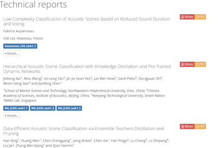
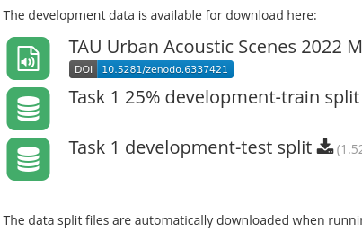
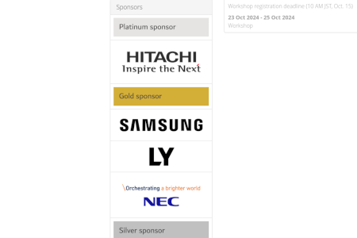
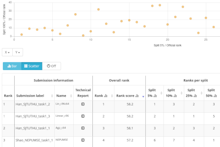
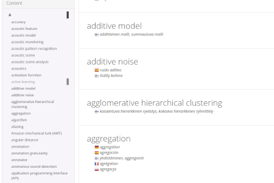
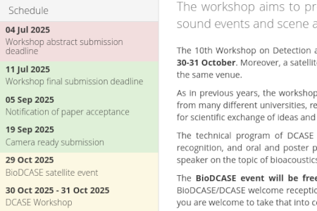
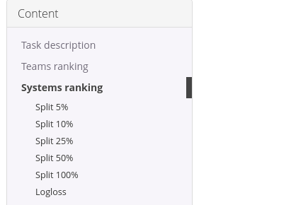
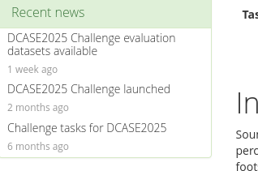
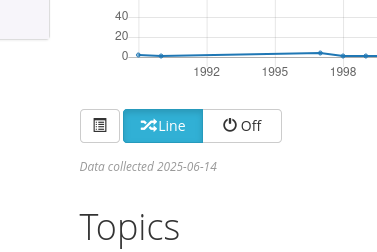
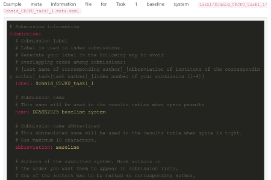

This page showcases web development tools, plugins, and themes for designing and maintaining content-rich academic websites. Built primarily around the Pelican static site generator, they're aimed at researchers and developers who deal with structured data and want their site content automated and easy to maintain.
What’s Included
-
Pelican Plugins for Structured Content
Tools for generating publication lists, personnel directories, file repositories, sponsor listings, and more, all from structured YAML or BibTeX data. -
General Content Enhancements
Plugins for generating tables of contents, listing recent articles, and tracking file modification times. -
Themes for Academic Sites
Custom Bootstrap-based themes (bootcaseandbootcase5) designed for academic communities and personal research websites.
These tools are actively used in projects like the DCASE Community website and are freely available for integration into your own Pelican-based sites.
Pelican
Pelican is a static site generator written in Python that makes easily maintainable websites. It converts Markdown content into static HTML, supports themes and plugins, and integrates with tools like Jinja2 for templating. It's particularly well-suited for machine learning and academic websites, since most researchers already know Python well enough to write their own plugins.
I've developed many plugins and themes over the years for academic community websites — in action on the DCASE Community website and on this one. Feel free to use them in your own projects.
Structured Content Creation Plugins

Publication lists
pelican-btex
A simple Pelican plugin to produce publication lists from BibTex files. Designed for use with Markdown content and compatible with Bootstrap 3 and 5-based templates.

File Repository Listings and Items
pelican-brepository
A simple Pelican plugin to produce file listings and single items from yaml data structures. Designed for use with Markdown content and compatible with Bootstrap 3 and 5-based templates.

Sponsor Listings
pelican-bsponsors
A simple Pelican plugin to produce sponsor listings from yaml data structures. Designed for use with Markdown content and compatible with Bootstrap 3 and 5-based templates.

Dynamic Tables with Data Visualization
pelican-datatable
A simple Pelican plugin to produce table of content for content pages. Designed for use with Markdown content and compatible with Bootstrap 3 and 5-based templates.

Glossary
pelican-bglossary
A simple Pelican plugin to produce table of content for content pages. Designed for use with Markdown content and compatible with Bootstrap 3 and 5-based templates.

Important Dates
pelican-bdates
A lightweight Pelican plugin for generating important date listings from YAML data structures. Designed for use with Markdown content and compatible with Bootstrap 3 and 5-based templates.
General Content Plugins

Table of Content
pelican-btoc
A simple Pelican plugin to produce table of content for content pages. Designed for use with Markdown content and compatible with Bootstrap 3 and 5-based templates.

Most Recent Articles
pelican-bnews
A simple Pelican plugin for generating a list of the most recent articles on a content page. Designed for use with Markdown content and compatible with Bootstrap 3 and 5-based templates.

Fetch File Modification Time
pelican-modified
A simple Pelican plugin to produce table of content for content pages. Designed for use with Markdown content and compatible with Bootstrap 3 and 5-based templates.

Fetch File Content
pelican-include
A simple Pelican plugin to produce table of content for content pages. Designed for use with Markdown content and compatible with Bootstrap 3 and 5-based templates.
Themes
BS3 Theme for Academic Sites
bootcase
Bootstrap v3 based theme designed for academic community sites and academic personal sites. Theme is used for example in DCASE and BioDCASE academic community websites
B5 Theme for Academic Sites
bootcase5
Bootstrap v5 based theme designed for academic community sites and academic personal sites.
General

Dynamic HTML tables with data visualization
js-datatable
An open-source jQuery plugin for creating dynamic HTML tables with built-in data visualization capabilities. This plugin was originally developed to support academic data visualization, and specifically for presenting results from the DCASE2016 evaluation campaign. The plugin was designed to integrate seamlessly with the Pelican static site generator. The project later evolved into js-datatable, a standalone jQuery plugin that encapsulates the core functionality. For Pelican integration, refer to the companion project: pelican-datatable.
Header images
everyday-patterns
Everyday Patterns is a small collection of images with various patterns found from our everyday environments licensed under CC. Images have been cropped from various personal photographs taken by me. Images are formatted to be used as wide header images in web-pages (size approximately 1900 px x 400 px).